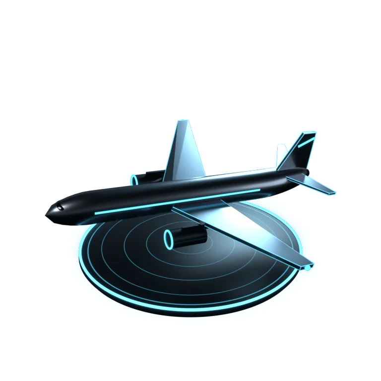
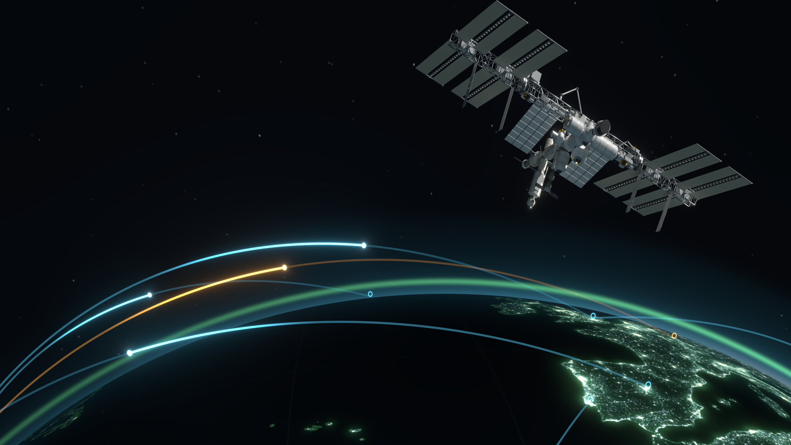
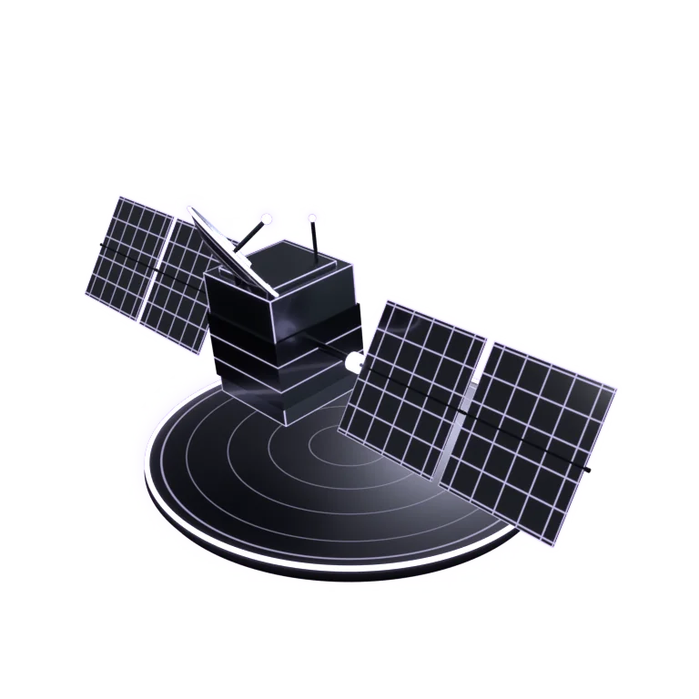
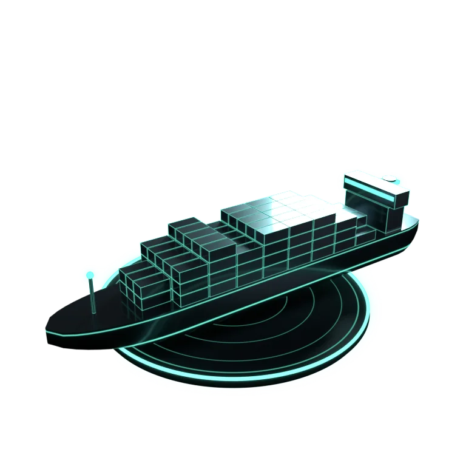
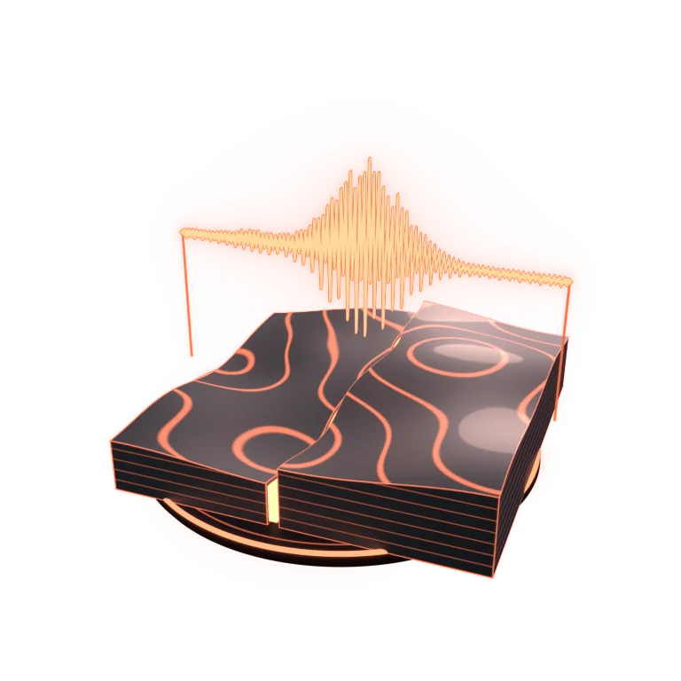
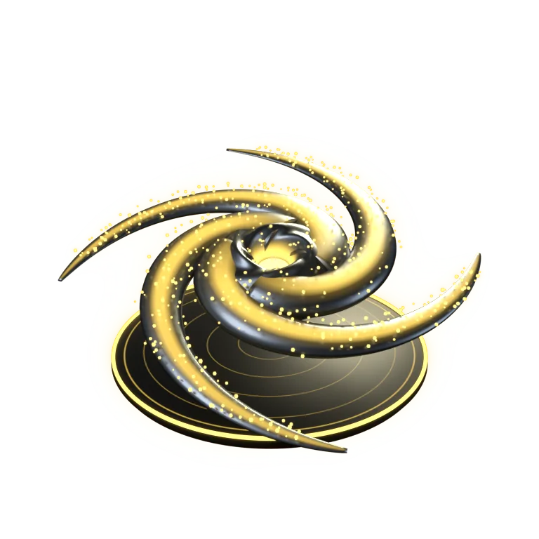
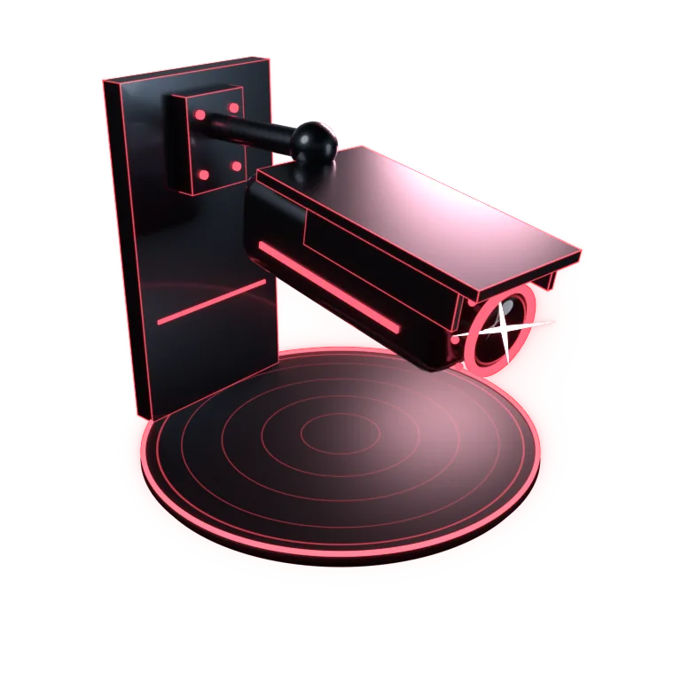
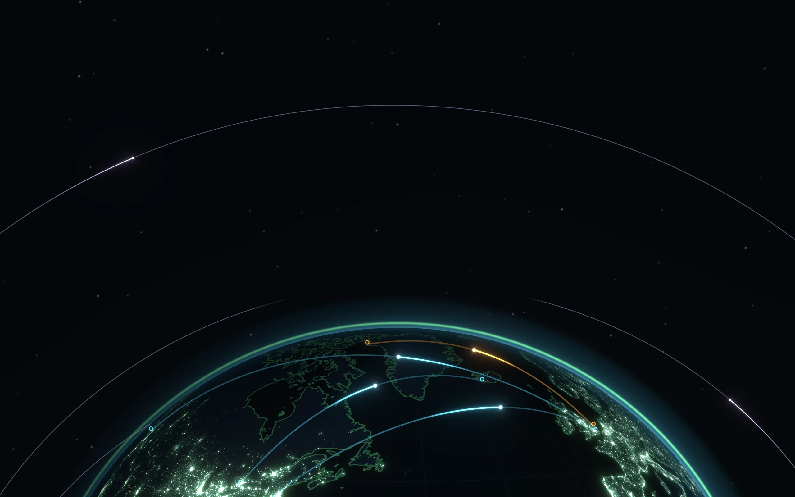

Aircraft
Every ADS-B transponder in range, worldwide. Civil, military and emergency squawks, each colour-coded, with trails and type.

Aircraft, military flights, satellites, ships, storms, quakes and street cameras, all on one dark ops-room screen, straight from public feeds. No account, no tracking, no install needed.
Runs in any browser · the download adds live aircraft tracking · every version
What's above me tonight? → the space station, Starlink trains, planets and aurora over you, with reminders
The newest version is selected. Every earlier release stays online, exactly as it shipped.
Runs right here, no install: satellites, quakes, storms, ships, news and cameras. Live aircraft need the download (a tiny local helper).
Layers you switch on and off like an air-traffic controller. Click anything for the full picture: callsign, altitude, orbit, magnitude, wind speed, live camera frame.

Every ADS-B transponder in range, worldwide. Civil, military and emergency squawks, each colour-coded, with trails and type.

Orbits computed in your browser from CelesTrak data with SGP4: the ISS, Tiangong, weather sats and GPS, with ground tracks.

AIS vessel positions: the Baltic out of the box, the whole world's shipping with a free aisstream.io key.

USGS quakes as they're reported, sized by magnitude, plus GDACS disaster alerts and NASA natural events.

Hurricanes and typhoons with forecast cones, precipitation radar, severe-weather alerts and the aurora forecast.

Public traffic cameras from London, New York, California, Singapore and Finland. Click one for the latest frame.
Real captures from the app. Same screen on your phone and your desktop.
Hand-modelled spacecraft for the new 3D globe view. Drag to orbit, scroll to zoom.
The web version runs right here. The download adds a tiny local helper. A few feeds (the ADS-B aircraft networks, OpenSky, NOAA hurricane cones, some cameras) refuse requests from web pages, and the helper relays just those.
One folder, about 7 MB. Nothing to install.
Start Open Overwatch.bat on Windows, or python3 serve.py / node serve.js on Mac and Linux.
Your browser opens the map at 127.0.0.1:8787. Every layer lights up.
USGS, NOAA, NASA, CelesTrak, GDACS, adsb.lol and other public and volunteer feeds. Nothing scraped, nothing secret.
No sign-up, no cookies, no analytics. Your settings stay in your browser.
The whole app is a single HTML page. Read it, fork it, host it anywhere.
It rate-limits itself, caches orbits for two hours and backs off when a feed struggles.

I vibe code this with Claude, an AI: I say what I want, Claude writes and tests the code, and I try to make good calls. It surely has bugs I haven't found. That's why it's free and open source, and why I'd love you to download it, fork it and build anything you like on it: a better version, something completely different, a school project. You don't need to ask me first.
If you'd like to take the whole project over, I'd be glad to hand it off. Open an issue on GitHub and say so. Also by me: Ironbound, a free open source RTS made the same way.